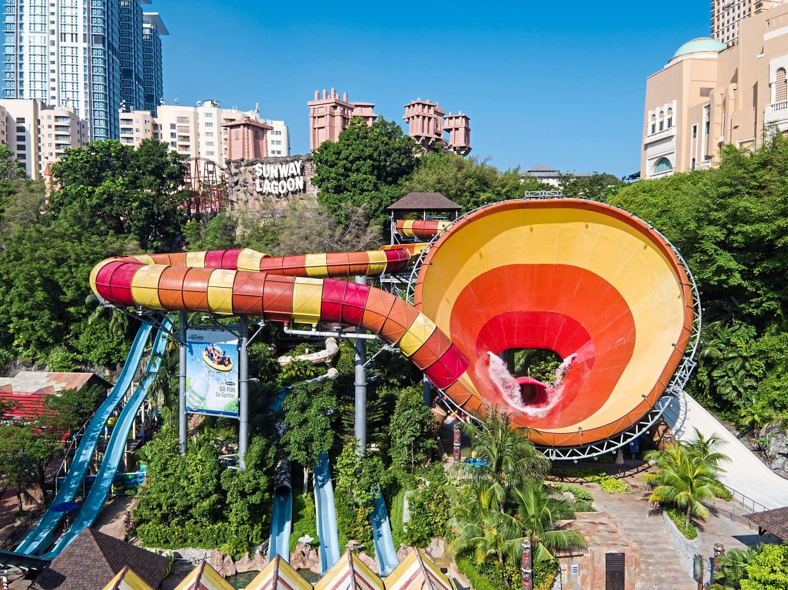
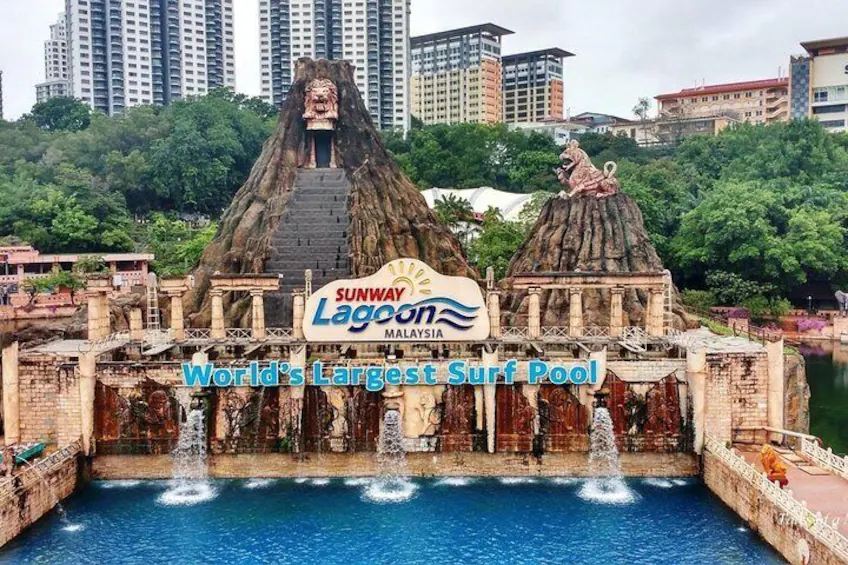
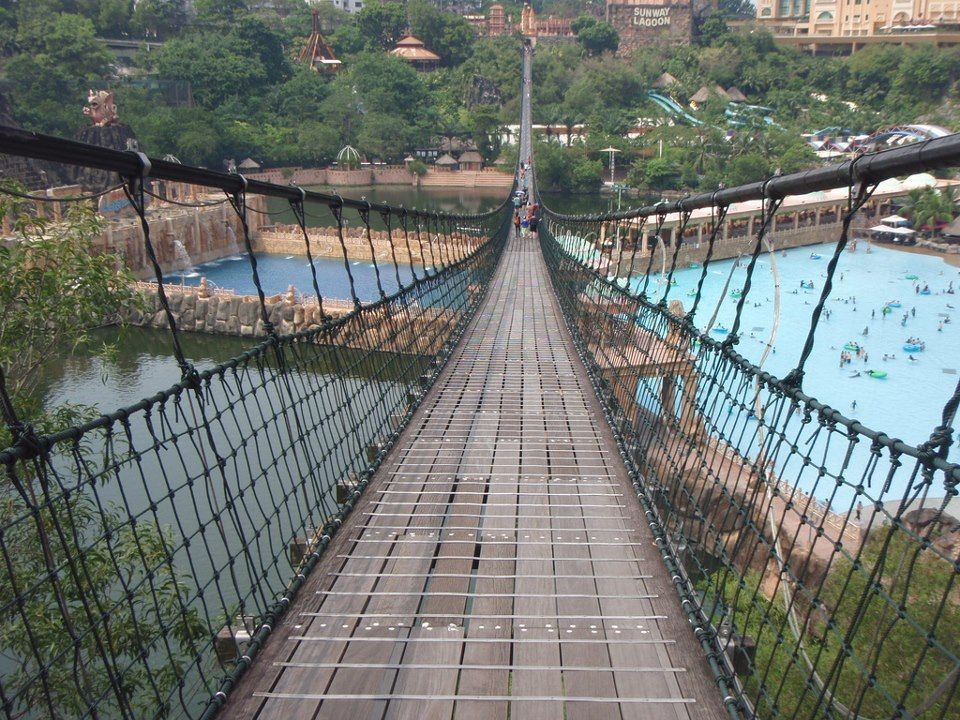

|  |  |  |
Vuvuzela (World’s Largest Vortex Ride) |
Surf Beach (World's Largest Surf Pool) |
Pedestrian Suspension Bridge |
Dive into the belly of the beast — Launch from a tower 11 storeys high, plunge through turbulent water like the rapids with twists and turns then plummet into Malaysia's largest water ride where you’ll be gobbled up by the beast that is the Vuvuzela. Behold the world’s highest, largest and most thrilling water ride! |
You can also show off your surfing skills on Malaysia's only Surf Simulator or 'FlowRider'. Stretching over 13,000 square meters, the Surf Beach is capable of churning out perfectly shaped waves up to the maximum height of eight-feet. | The Malaysia Book of Records Holder for the longest bridge in the world at 428m length. Get a bird-eye view of the entire park from 60 feet above the lake. |